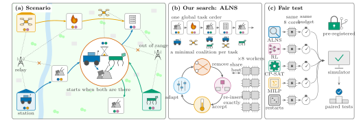
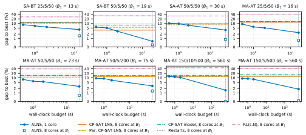
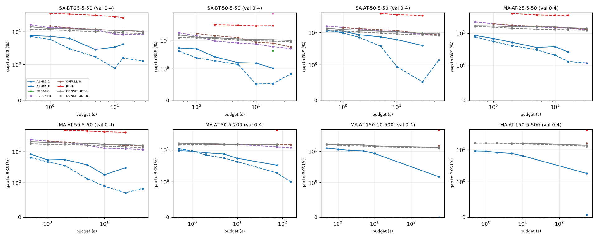

이종 다중로봇 coalition 형성 + 스케줄링에 대한
pre-registered 비교 연구
ALNSHeteroMRTACP-SATRL baseline수치: val dry run (test run 진행 중)
← → 이동 · F 전체화면 · O 개요 · S 발표자 노트
“RL policy가 SOTA”라는 HeteroMRTA(RA-L 2025) 주장이 같은 코어·같은 시간에서 비교해도 살아남는가?
계획 표현 하나 잘 잡은 ALNS가 8개 설정 모두에서 모든 경쟁자를 유의하게 이김 (46/46 test, Holm).

Paper Figure 1. (a) 여러 skill 조합이 필요한 task, 전원이 도착해야 시작 → 먼저 온 로봇은 대기 (b) ALNS (c) compute-matched 프로토콜
agent $i\in A$: trait $a_i\in\{0,1\}^K$, depot $o_i$, 속도 $v$
task $j\in T$: 위치 $x_j$, 소요 $d_j$, 요구 $r_j\in\mathbb N^K$
이동시간 (Euclidean) $$\tau_{jk}=\frac{\lVert x_j-x_k\rVert}{v}$$
벤치마크: SA-BT (단일 skill, binary) · SA-AT (additive, 최대 2) · MA-AT (다중 skill). 시뮬레이터 limit 200 초과 = 실패 (makespan 200으로 계산)
모든 agent는 자기 task를 $\pi$ 순서대로 방문 → forward pass $O(\sum_j |C_j|)$로 스케줄 계산
모든 route 선행관계가 $\pi$를 따름 → cycle 불가
시뮬레이터와 동일한 이동시간 → makespan 재현 (수백 plan 테스트)
시뮬레이터는 이미 cover된 task에 합류 불가 → 불필요 멤버 없음 유지
모든 deadlock-free 계획에 대해, makespan이 더 크지 않은 minimal-cover 계획 $(\pi,C)$가 존재한다.
tail $\theta_k$ = task $k$ 시작부터 끝까지 최장경로 (route DAG의 longest path)
Destroy: random · related (Shaw) · worst-wait · critical chain · route segment + 동일 trait agent 간 route-tail 교환
Repair: random · 도착시각 20% 교란 · 요구 큰 순 · regret-2
Accept: $g(x')\le g(x)$ 또는 $u\lt e^{-(g(x')-g(x))/t}$
$q\sim U\{1..q_{\max}\}$, $q_{\max}=\mathrm{clip}(\mathrm{round}(4\sqrt{50/m}),2,6)$
$t_0=0.01\,g_0\min(1,(50/m)^{1.5})\to t_0/50$ · 3000 iter 무개선 시 best로 복귀
Numba 커널: 50-task 7,700–12,800 it/s, 500-task ≈4,300 it/s (worker당)
모든 방법 8 physical core lane (Xeon 8480C, 최대 6 lane). CPU 사용량 실측 보고. throttling >40% 면 재실행
$B_1$ = 논문이 보고한 RL(s.10) 계산시간, $2B_1$도. 모델 빌드·construction 포함. 초과 >10%+0.25s → budget 시점 best
가설·경쟁자·budget·분석·결정규칙 + git tree hash 동결. harness가 hash 불일치 시 test 실행 거부. test는 1회
Split: dev 20 (튜닝, 모든 경쟁자도 설정별 튜닝) · val 20 (dry run, 기준해) · test 50 (확증 1회). 공개 RL policy가 16개 설정 모두에서 논문 평균을 ½σ 이내로 재현 → 인스턴스·사용법 검증
| 방법 | 내용 |
|---|---|
| RL(s.$N$) | 공개 policy, 8 프로세스가 budget 끝날 때까지 rollout ($N$ = 발표치의 3–24배) |
| CP-SAT LNS | task window 해제 후 agent별 circuit 제약으로 재해결, sub-solve당 8 thread |
| Parallel CP-SAT LNS | 8 single-thread worker가 공유 incumbent 개선 → 코어 100% 사용 |
| CP-SAT model | 전체 모델 + CP-SAT portfolio, construction hint |
| CTAS-D | 벤치마크가 쓴 exact MILP, Gurobi→CP-SAT 포팅. 공개 Gurobi 해 재현, 60s에 4.1% 더 짧은 해 |
| Restarts | 우리 randomized construction 8 stream |
| Setting (agent/species/task) | $B_1$ (s) | RL $N$ |
|---|---|---|
| SA-BT 25/5/50 | 13.45 | 154–192 |
| SA-BT 50/5/50 | 19.14 | 144–162 |
| SA-AT 50/5/50 | 29.80 | 140–166 |
| MA-AT 25/5/50 | 16.34 | 157–241 |
| MA-AT 50/5/50 | 23.43 | 135–194 |
| MA-AT 50/5/200 | 75.20 | 40–67 |
| MA-AT 150/10/500 | 560.20 | 32–36 |
| MA-AT 150/5/500 | 560.50 | 32–40 |
20-task 설정 8개는 제외: exact 방법이 도달 (SA-BT 25/5/20은 CP-SAT가 val 전부 최적 증명) → supplement에 기술적 보고
500-task: CTAS-D는 dev에서 해 없음 + 55–87 GB 메모리 → 실패 처리, 미실행
C1: 8코어 ALNS @$B_1$ < 각 경쟁자 8코어 @$B_1$ (46 tests)
C1 @$2B_1$: vs PCPSAT·CP-SAT model·Restarts, ≤200 task (17)
C2: 1코어·2초 ALNS < 각 경쟁자 8코어 @$B_1$ (46)
결정규칙: 설정 내 모든 test 유의 ⇒ 설정 통과, 8개 중 ≥6이면 C1 주장
one-sided paired $t$-test · family별 Holm 보정 ($\alpha=0.05$) · 최소 effect size 없음, effect size 전부 보고
막대 = 설정별 평균비의 최소–최대. 세로선 1.0 오른쪽 = 경쟁자가 나음. 전부 왼쪽.
C1 8/8 설정46/46 유의 (max adj. p = 0.013)410/410 paired run 승$2B_1$: 6/6, 17/17
축 0–1.2 선형. CTAS-D는 60개 중 12개만 budget 내 해 발견 (실패 = 200).
| 방법 | Gap to best (%) | CPU used |
|---|---|---|
| ALNS (ours) | 0.0–1.5 | 0.99–1.00 |
| CP-SAT LNS | 3.6–13.3 | 0.28–0.79 |
| Parallel CP-SAT LNS | 5.5–13.5 | 0.99–1.00 |
| CP-SAT model | 7.8–15.8 | 0.43–0.90 |
| CTAS-D (MILP) | solves 0–100% | 0.43–0.97 |
| Restarts | 8.1–14.6 | 1.00 |
| RL(s.N) | 27.2–47.1 | 0.94–0.99 |
병렬화가 CP-SAT를 못 살림: threaded LNS는 sub-model 빌드가 직렬이라 코어의 28–79%만 사용. 완전 병렬 버전도 비슷
Restarts만으로 RL보다 13–23% 짧음 → 좋은 constructor가 격차 대부분, 탐색이 나머지
8 worker vs 1: 0.4–2.7%만 개선 → 우위는 병렬성보다 코어당 효율

C2 (1코어·2초 vs 8코어 @$B_1$): 4/8 설정 — 결정규칙상 미충족. 실패: SA-BT 50/5/50, SA-AT 50/5/50, 500-task 2개 (대부분 CP-SAT LNS 대비 비유의). RL 대비는 전 설정 16.7–24.7% 단축, 7–280배 짧은 시간.
Parallel CP-SAT LNS · CP-SAT full model을 8코어 300s ($B_1$의 10–20배) construction에서만 시작
50+ task val 70개 중 0개도 ALNS 기반 best에 도달 못함. 평균 2.8–12.0% 더 김. CP-SAT certified lower bound는 12–58% 아래 → 최적성 gap 불명

한 번의 순차 결정으로 plan 구성. rollout을 늘리면 다양성은 늘지만 주어진 plan을 개선하지 않음
같은 시간에 plan 하나를 싸고 정확한 move 수천 번으로 개선. 모든 move feasible + $O(|C_j|)$ 평가
step당 이웃은 더 풍부하지만 매 step 모델 빌드·풀이 비용 → 병렬화 효과 미미
메시지: 학습이 틀렸다는 게 아님 — learned planner는 같은 compute의 강한 탐색과 비교돼야 한다.
DynHeteroMRTA-X 환경 + SPARC planner + T2 통신 계층을 1주 구축, dev에서 go/no-go gate 사전 설정
동적 방법 주장(C1-dyn) 철회 → supplement의 negative result. 논문 한계에 명시: “정적·중앙 계획만 평가, RL의 분산·반응성 장점은 미평가”
2e53eab · test campaign 시작 (5,400 job, 6 lane, ≈22h)docs/results/test/analyze.sh → paper/tools/make_tables.py로 표·매크로 재생성 → 이 슬라이드 숫자도 교체팀원 부탁: 숫자는 손으로 치지 말 것 — 전부 paper/tables/numbers.tex 매크로에서 생성. 논문 내용 외부 공유 금지 (익명 심사).
코드 cbba_sota/ · 논문 paper/ · 사전등록 docs/prereg-phase1.md · 결과 docs/results/